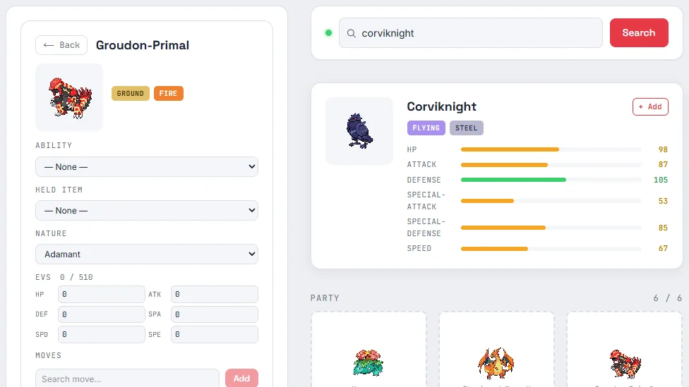

Pokemon Team Analyzer
A full-stack team builder that finds a team's weaknesses and suggests fixes.
The spark
I've been a Pokemon fan for as long as I can remember, and every playthrough came down to the same puzzle: six party slots, hundreds of choices, and one bad type matchup could sink the whole team. I wanted a tool that would spot those weak points before an opponent did, so I started building one that maps out a team's type coverage and uses AI to suggest how to make it stronger.
- React and TypeScript frontend that pulls structured data from the PokeAPI and surfaces team composition and type coverage.
- Node and Express backend that validates and transforms data before it reaches the client, with a relational schema planned for user accounts and saved teams.
- Exploring an LLM API to generate team recommendations, to learn how AI fits into a real application architecture.
- React
- TypeScript
- Node.js
- Express
- PokeAPI
Lassonde competencies
I turned a problem from my own playthroughs into a tool: it pulls structured data from the PokeAPI and analyzes type matchups to find a team's weak points, and I'm exploring how AI can suggest fixes.